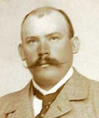
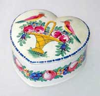
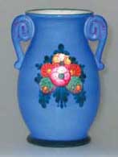
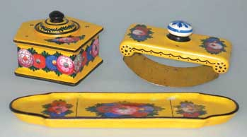
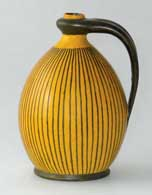
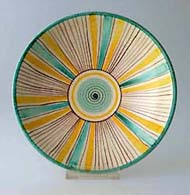
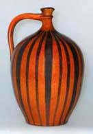

| Wilhelm
Kagel (1867–1935)
German pottery manufacturer

German
frescoe painter, studio potter and pottery manufacturer Wilhelm
Kagel was born in Mecklenburg in 1867. He initially worked as a
tradesman painter, then from 1887 studied Frescoe and Decorative
Painting at the School of Applied Crafts (Kunstgewerbeschule) in
Munich. He finally settled in Patenkirchen, establishing a studio
in 1892.
Works - Wilhelm Kagel I.


When orders for frescoe painting dried up, Kagel turned his attention
to pottery in 1904 and in 1906 established his Art Craft Studios
(Kunsthandwerkliche Werkstätten), where he made post-Art Nouveau
ceramics. The workshop was to become one of the most important in
the area, supporting 20 employees by 1910.
Works - Wilhelm Kagel II.

Kagel was succeeded by his sons Willy Kagel jr. (1906–1987),
who had studied in the famous German ceramics center of Höhr-Grenzhausen
from 1924-26 and Eugen (1909-1992), who took over administrative
duties. After Willy Kagel junior's death the workshops were closed.
Kagel’s daughter Regine Kagel-Gilder was a ceramist and sculptor.
Works of the Kagel pottery will be on display at the Werdenfels
Museum and Benkert
Antiques from March 25 May 26 2006.
More Featured Artists
More Articles
|
{kind=link}
{kind=link}
{kind=link}
{kind=link}
{kind=link}
{kind=link}